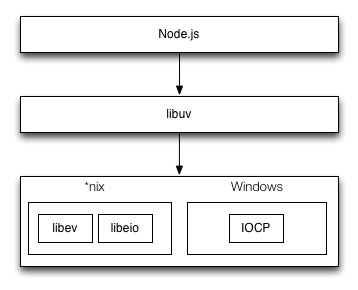
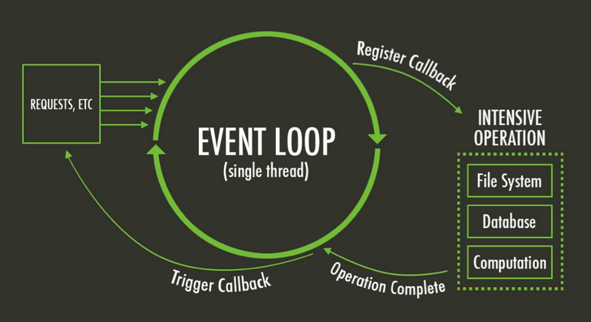

Node.js 解析
Node.js 嫁接了 JavaScript 生态和 C/C++ 性能与跨平台。
Node.js

内部顶层组件架构概览

- Application/Modules(JS)：JavaScript 程序、Node.js 核心模块和第三方 JS 的 npm 模块
- C/C++ Binding：桥接 Node.js 核心库依赖。
- Addons：桥接自定义或第三方 C/C++ 库
- V8：JavaScript 引擎
- libuv：异步功能 C 库
- 其他 C/C++ 组件和库： c-ares、crypto (OpenSSL)、http-parser 、zlib，自定义 C/C++ 组件和库等
语言分布
下图以 *nix 平台的 Node.js 为例：

运行流程

libuv 设计图
libuv 事件循环

默认由 4 个线程来处理不同的 I/O 。

说明：Node.js 的事件驱动，在Linux 版中使用 libev 和 libeio；在Windows 版中用的 IOCP 。